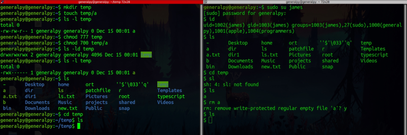
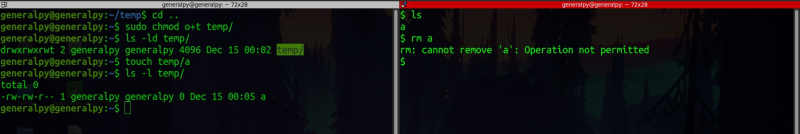

The last special permission is sticky bit and it is applied to the directories.
Generally in linux, other users can delete your files from a directory if they have write permissions for that directory.

james can delete file inspite of being not privileged enough to do that just because he has rwx access to parent directory.
To stop this, sticky bit is used.
There are 2 ways to set sticky bit :
chmod o+t file
chmod 1xxx file

We changed the sticky bit for directory and now other users cannot delete the files .